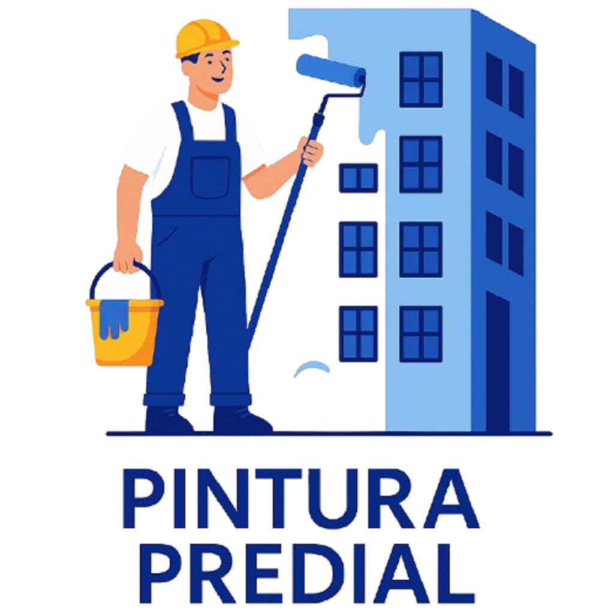
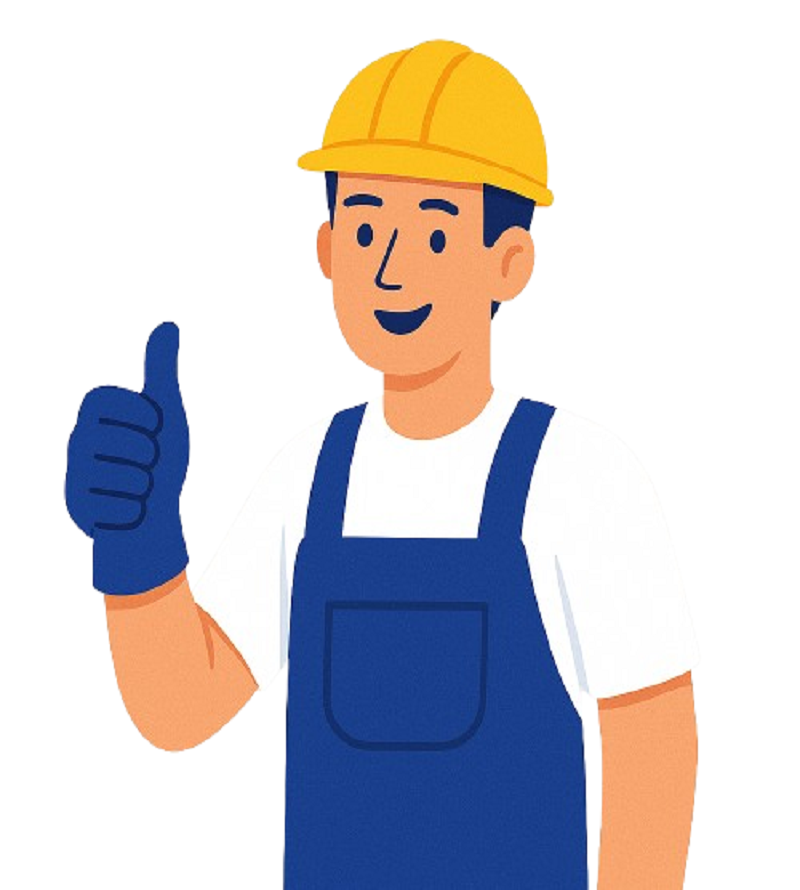
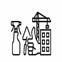

Pintura, lavagem e manutenção predial
Especialistas em pintura, lavagem e manutenção predial
Soluções completas para conservação, valorização e segurança do seu imóvel.
Atendimento técnico
Diagnóstico, planejamento e execução com foco no cuidado do imóvel.
Sobre a empresa
Conservação predial com acabamento, segurança e responsabilidade
A JM & Obras é especializada em pintura predial, lavagem de fachadas e manutenção predial, oferecendo soluções para condomínios, empresas, comércios e imóveis residenciais.
Atuamos com planejamento, equipe qualificada e atenção aos detalhes para entregar serviços duráveis, limpos e alinhados às necessidades de cada cliente.
Vistorias e orientações técnicas
Execução organizada e segura
Suporte do orçamento à entrega
Soluções
Serviços para valorizar e proteger seu patrimônio
Atendimento para condomínios, empresas, comércios e imóveis residenciais em São Paulo e região.

Pintura Predial
Pintura externa e interna com preparo de superfície, acabamento técnico e materiais adequados.
Saiba maisLavagem Predial
Limpeza de fachadas, muros e áreas externas para remover sujeiras, manchas e resíduos.
Saiba maisManutenção Predial
Correções, conservação e suporte preventivo para manter o imóvel seguro e funcional.
Saiba mais
Manutenção Geral
Serviços gerais para imóveis residenciais, comerciais e industriais com atendimento ágil.
Saiba mais
Reformas
Reparos e melhorias com planejamento, organização de etapas e acabamento profissional.
Saiba maisConservação de Fachadas
Cuidados preventivos para prolongar a vida útil, aparência e segurança das fachadas.
Saiba maisDiferenciais
Por que escolher a JM & Obras?
Uma operação próxima, transparente e focada em preservar o valor do seu imóvel.
Equipe qualificada
Profissionais preparados para diferentes demandas de conservação e manutenção.
Segurança na execução
Processos orientados para organização, cuidado com áreas comuns e proteção da equipe.
Materiais de qualidade
Uso de produtos e insumos adequados para cada tipo de superfície e necessidade.
Atendimento personalizado
Cada orçamento considera o contexto do imóvel, prioridades e prazos do cliente.
Compromisso com prazos
Planejamento de etapas para reduzir transtornos e manter a obra sob controle.
Orçamento transparente
Propostas claras, com escopo definido e comunicação direta antes da execução.
Galeria
Antes e depois de serviços prediais
Espaço preparado para receber fotos reais das obras, com exemplos visuais dos principais serviços.
Orçamento rápido
Seu patrimônio merece cuidado profissional
Blog
Conteúdos para cuidar melhor do seu imóvel
Conservação
Como conservar a fachada do condomínio
Rotinas simples de inspeção e manutenção ajudam a preservar acabamento, segurança e valor do prédio.
Ler artigoPintura
Quando fazer pintura predial
Sinais como manchas, descascamentos e fissuras indicam que a fachada precisa de avaliação técnica.
Ler artigoLavagem
Benefícios da lavagem predial periódica
A limpeza programada melhora a aparência, reduz acúmulo de sujeira e facilita a manutenção preventiva.
Ler artigoContato
Solicite uma avaliação para seu imóvel
Fale com a JM & Obras para receber atendimento personalizado em pintura, lavagem, reforma e manutenção predial.
Chamar no WhatsApp